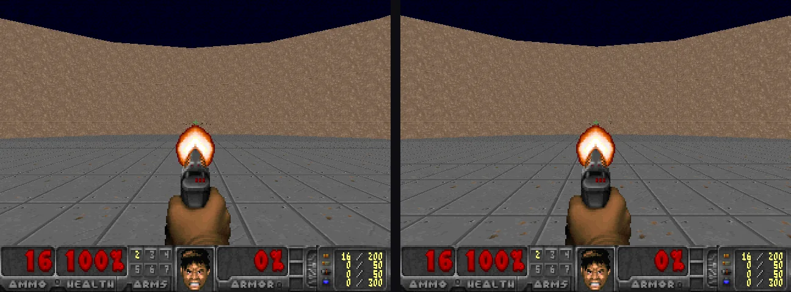

reports/embeddinggemma2/ or the experiment's README.1 · Released this morning
October 6 · getting a day-old model running locally
EmbeddingGemma 2 has 740M parameters in three parts: a 270M text backbone, a 170M vision encoder and a 300M audio
encoder, all mapping into one 768-dimensional space that can be truncated to 512, 256 or 128 dimensions. Text,
images, video frames and audio can even be interleaved into a single input. The repository was not gated, and
transformers 5.19.0, the first release that knows the embedding_gemma2 architecture, came out the
same day.
On an Apple M3 Max it worked on the first try. The model card warns that float16 overflows its activations, so the Mac runs float32 and the RTX 4090 bfloat16. Metal float32 matched the CPU reference to a cosine of 1.00000, and bfloat16 to 0.99996.
| First retrieval checks, known answers, Metal float32 | Result |
|---|---|
| Text query → document, including Spanish and German queries | 8/8, also at 128 d |
| Caption → photo, among 27 stock photos | 27/27 |
| Spoken sentence → its paraphrase, including Spanish audio | 8/8 |
| Spoken descriptions (“A zebra.”) → the right photo, among 27 | 6/6 |
| Video → its label | 4/5 |
| Text → the right two-image interleaved pair | 9/9 |
2 · No training
October 6 · cosine similarity to prompts decides everything
The first plan was the ModernBERT recipe: freeze the encoder and train a small head. The brief changed it to no training at all. Every decision must come from comparing embeddings with text prompts.
Embedding a whole frame does not work: mean-pooling averages away where things are, and asking whether the monster is left, centre, right or absent was right 26% of the time, below the 38% that always guessing the most common answer gets. Crops fix this. The view is cut into pieces and each piece is embedded on its own; the status bar's HEALTH and AMMO boxes become their own images, compared with prompts such as “HEALTH 40%” and “AMMO 12”.
These readings come from the Apple-silicon probe against logged game state
(zero-shot-probe-mps-negation-presence.json). The instruction is matched once per run, text to text,
against three short behaviour descriptions.
3 · Contrast, not negation
October 6 · what a monster prompt should be compared with
A single prompt's cosine means little on its own; a crop is always somewhat similar to “a monster”. The decision needs a contrast: a positive set of prompts against a negative set, each averaged into one prototype, with the sign of the difference deciding. The natural negative, “is not a monster”, barely works. Embedding models place a phrase and its negation close together, and “is a monster” against “is not a monster” separated monster crops from empty ones with an AUC of only 0.62. Contrasting with what is actually in the scene (“an empty brown stone wall”, “a grey tiled floor”, “a dark night sky”) reached 0.96. Ensembles of three or four prompts beat single prompts in every set we tried.
👁 The crops (image)
- 17 overlapping 128-px windows, 32 px apart, across the band where monsters stand (y 120–245)
- The HEALTH and the AMMO boxes of the status bar
- All 19 embedded in one batch per decision
# The prompts (text)
- “a monster”, “a pink demon”, “a zombie soldier” vs wall, floor and sky
- “HEALTH 0%” … “HEALTH 100%” and “AMMO 0” … “AMMO 50”
- Three behaviour descriptions for the instruction
The decisions
- A monster is visible if any window's margin is above zero
- The best window, refined by a parabola through its neighbours, gives the bearing
- Fixed rules: turn toward it, fire within ±0.12 of the crosshair, back off when hurt
4 · Firing at its own gun
October 6 · the first runs on the RTX 4090
The first 60-second attack run on the GPU, which still decided presence with the “not a monster” contrast, scored 12 kills and 7 deaths. No monster was in view for 868 of its 1,050 decisions, yet the policy saw one in 860 of them and held ATTACK 96% of the time. Each shot raises the pistol, and its muzzle flash reaches into the centre crops, where it matches “a monster”: firing kept the policy firing, and monsters walked up from the sides.

Two changes fixed it. The weapon is no longer rendered (set_render_weapon(False)), a display setting
that gives the policy no extra information. And presence now comes from the scene contrast itself: a monster is
visible when some window is closer to the monster prompts than to wall, floor and sky.
| Perception on the same 150 logged frames, RTX 4090 | “Not a monster” rule | Scene rule |
|---|---|---|
| Monster visible or not, correct (always answering yes: 75.3%) | 75.3% | 80.7% |
| Empty views correctly rejected | 2.7% | 94.6% |
| Fire decisions with a monster under the crosshair | 52.6% | 89.3% |
| Bearing error to the closest monster, median | 0.026 | 0.025 |
Both probes read AMMO exactly in 99.3% of frames, with a mean HEALTH error of 1.0. The scene rule misses about a quarter of the frames that contain a monster; the policy then turns to search, which usually brings the monster back into view. The next 60-second attack run scored 37 kills and 2 deaths.
5 · Evade is its own policy
October 6 · new contrasts on the same crops
With the scene rule, an evade policy that was simply the attack rules with firing turned off died 5 times in 60 seconds: when it saw nothing it turned to search, and monsters reached it in the meantime. Evade became its own policy, with its own contrasts on the same window crops.
| Contrast | Positive prompts | Negative prompts | Decides |
|---|---|---|---|
| danger | “a monster right in front of you, up close”, … | “a small monster far away”, … | close: face it, back off, strafe away |
| escape | “an empty open floor”, “a clear path …”, … | the monster prompts | far: turn toward open space |
It never fires, keeps circling backwards while it scans, and the dashboard shows the danger reading and an escape marker. The showcase's evade run survived all 60 seconds without a shot.
6 · How many embeddings per second
October 6 · RTX 4090, bfloat16, through sentence-transformers
| Input | One at a time | Batched |
|---|---|---|
| Short text, 8 tokens | 36/s | 10,179/s at 1,024 |
| Passage, 130 tokens | 36/s | 1,004/s at 64 |
| Image, 70 vision tokens | 21/s | 134/s at 19 |
| Image, 140 vision tokens (the Doom crops) | 18/s | 71/s at 8 |
| Image, 280 vision tokens (the model default) | 18/s | 33/s at 64 |
| Image + short text, 140 vision tokens | 21/s | 73/s at 8 |
Images cost far more than text: each vision token is built from nine image patches, so a 140-token crop sends
about 1,260 patches through the vision encoder. Adding text to an image costs almost nothing. With 19 crops per
decision at about 70 images per second, the policy decides about three and a half times per second before the
dashboard and recording. Rates include CPU preprocessing; nothing was compiled or tuned
(throughput.json).
7 · What this does not show
The boundaries of a same-day proof of concept
Nothing was trained, but the prompts, the crop band and the rules were designed for one scenario while looking at its frames, and each result is one 60-second run on one seed. The rules decide the strategy; the embedding model supplies perception and reads the instruction. Strategy, distance and numbers beyond the HUD's own digits are not tested, and neither is any other map.